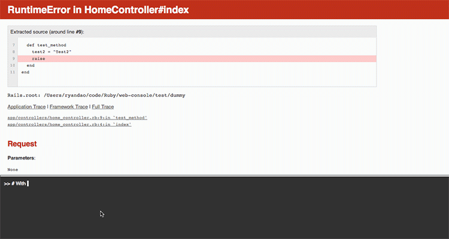

Rails 4.2 Kararlı Sürümü Yayınlandı
Popüler Ruby web framework’ü Rails’in 4.2 sürümü, kararlı olarak yayınlandı. Sürüm, son betasından bu yana 1600’den fazla commit ile güncellendi ve kullanıma hazır hale getirildi. Şimdi sürümdeki önemli özelliklere tekrardan göz atalım:
Active Job ve Action Mailer #deliver_later
En önemli yeniliklerden birisi olan Active Job, arkaplan iş yöneticileri için bir bağdaştırıcı görevi görüyor. Bu sayede jenerik bir biçimde yazdığınız işler kuyruğa atılıyor ve tüm yöneticiler üzerinde çalıştırılabiliyor. ActiveRecord ile ilişkisel veritabanlarının çalışma tarzına benzer bir mantıkla çalıştığı söylenebilir.
Bunun yanında Action Mailer sistemine eklenen yeni bir özellik sayesinde, e-postalar gecikmeli olarak gönderilebiliyor. “deliver_later” metodu ile gerçekleştirilen bu eylem, gönderilecek e-postayı iş kuyruğuna ekliyor ve belirlenen zamanda gönderilmesini sağlıyor.
Global ID
Bu kütüphane ile ActiveRecord üstünden çektiğiniz kayıtları anında serileştirebiliyorsunuz. Tipik nesne numaraları yerine, serileştirilmiş bir kimlik kullanabilmenizi sağlıyor. Örnek olarak:
>> person_gid = Person.find(1).to_global_id
>> person_gid.to_s
=> "gid://app/Person/1"
Adequate Record
Bu kütüphane sayesinde Active Record üstünden sıklıkla yapılan sorgulamalar kısmi olarak önbelleğe alınıyor ve gerektiğinde tekrardan kullanılarak hız kazanımı sağlanıyor. Örnek kıyaslamalar için şuraya gözatabilirsiniz:
http://tenderlovemaking.com/2014/02/19/adequaterecord-pro-like-activerecord.html
Web Console
Google Summer of Code ile gelen bu proje sayesinde, sayfa bir istisna/hata oluşturduğu zaman anında bir konsol açılıyor. Bu konsoldan o anda geçerli olan işlemleri ve değişkenleri denetleyebilmeniz sağlanıyor. Buna ek olarak, sadece hata oluştuğunda değil, geliştirme sürecinde iken konsolu sayfanın altında sürekli açık bırakabiliyorsunuz.

Foreign Key
Bu özellikle beraber, Rails uzun zamandan sonra Active Record modellerinde dış anahtarları (foreign key) desteklemeye başlıyor. Active Record migration’ları için şimdilik “add_foreign_key” ve “remove_foreign_key” metotları eklenmiş durumda. Önemli bir ayrıntı olarak, dış anahtar özelliğinin şu anda sadece MySQL ve PostgreSQL bağdaştırıcılarını desteklediğini belirtmekte fayda var.
Bunun dışındaki eklenenler, çıkartılanlar, önerilmeyen (deprecated) yapılar ve hata yamaları ile ilgili detaylı bilgiler için:
http://guides.rubyonrails.org/4_2_release_notes.html
comments powered by Disqus